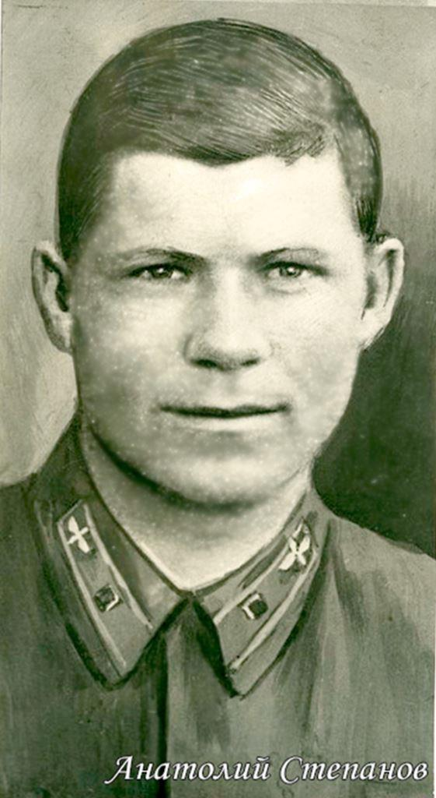

La Seconde Guerre mondiale restera à jamais dans les mémoires comme l'un des événements les plus cruels et les plus sanglants de l'histoire. Nous ne pouvons oublier les héros qui se sont battus courageusement sur le front et à l'arrière. Grâce à leurs sacrifices, nous vivons dans le monde tel que nous le connaissons.
Un de ces héros s’appelle Anatoly Fedorovitch Stepanov, il serait né à Tsaritsyne en 1910 et a servi dans l’armée de l’air soviétique. Il est l’auteur de nombreux exploits, dont le dernier lui a coûté la vie.
En juillet 1941, Stepanov est capturé par les Allemands, qui ont abattu son avion au-dessus de l’Estonie. Il est ensuite incarcéré dans divers camps jusqu'à ce qu'il se retrouve en Belgique, où il réussit à s’évader et à entrer en contact avec la Résistance locale. En 1942, des groupes et des organisations disparates se sont unis au Front de l’Indépendance.
Stepanov rejoint la Résistance belge en 1943 au sein de la compagnie russe du 4e Régiment des Partisans Armés du Front de l’Indépendance de l’Ourthe-Amblève. Il s'installe dans le petit village de Géromont, chez le résistant Renard et participe activement aux actions de contre l’ennemi.
Le 12 juillet 1944, Anatoly Stepanov connait une fin tragique. Depuis ce jour, soixante-seize années se sont écoulées, mais le temps n’a pas d’effet sur l'importance de son sacrifice. Stepanov a sans la moindre hésitation donné sa vie pour sauver celle de dizaines de personnes.
Ce 12 juillet, au cours d’une opération des SS, Stepanov et ses camarades se sont cachent dans les galeries des carrières de Géromont. La veille, lui et d’autres personnes recherchées par les nazis ont été alertés par des guetteurs. Stepanov et ses camarades se retrouvent au niveau inférieur de la carrière. Les Allemands ont cherché par tous les moyens à capturer les partisans et prennent des dizaines d’habitants en otage, que les SS obligent à aider à la recherche. Un des camarades de Stepanov a été découvert et, après un long interrogatoire, envoyé en prison.
Devant leur échec, les nazis annoncent qu'ils tueraient des otages si les partisans ne se rendaient pas.
En entendant cela, Stepanov préfère se sacrifier plutôt que de laisser les habitants de Géromont se faire massacrer. À son camarade Ivan Paltchikov, Anatoly dit de rester au fond des galeries, là où il ne sera pas recherché.
Stepanov est interrogé brutalement, torturé durant quatre heures. Les nazis l'ont crucifié à la cloison d’un wagon de marchandises avec des baïonnettes, cherchant à lui causer des douleurs insoutenables. Cependant, aucun supplice n'a réussi à le faire parler. Stepanov a nié avoir quelque rapport que ce soit avec les habitants de Géromont. Il ne dit pas un mot de ses camarades, répétant seulement qu'il ne connaissait personne à Géromont où il était arrivé récemment. Il a compris qu'en mentionnant ne fût-ce qu’un nom, il condamnerait les habitants à une mort certaine.
Réalisant qu'ils ne parviendraient pas à faire parler Stepanov, les Allemands le sortent du wagon et, sous les yeux des otages effrayés, ils lui tirent une rafale de mitrailleuse depuis un half-track. Les nazis ont ensuite jeté le corps de Stepanov dans un fossé au bord de la route, interdisant aux habitants de s'approcher de lui sous peine de mort. Durant la nuit, malgré les menaces des Allemands, les citadins emmènent la dépouille de Stepanov et l'enterrent secrètement.
Les occupants quittent alors le village, non sans emmener une partie des otages, dont certains sont libérés dans la journée. Les autres otages sont rentrés chez eux après quelques jours passés en prison. Grâce au sacrifice de Stepanov, les villageois – dans leur grande majorité – ont eu la vie sauve1. Aujourd’hui encore, les habitants de Géromont se souviennent d'Anatoly Stepanov, les descendants des résistants et des otages lui sont reconnaissants pour son courage et l'honorent comme un héros national.
Il est inhumé au cimetière de Comblain-au-Pont. Sa tombe est à juste titre sur le Chemin de la Gloire. Pour honorer la mémoire du héros, un monument sera érigé à l'endroit même où il a été abattu2. Stepanov a également été décoré à titre posthume pour sa lutte contre l'ennemi. C'est le moins que nous puissions faire pour rendre hommage à son sacrifice héroïque.
Malheureusement, l’histoire de nombreux héros restent inconnue, mais nous pouvons contribuer à les faire renaître. Nous devons rechercher les noms de ceux qui ont tout sacrifié pour sauver la vie d'autrui, qui ont négligé leurs intérêts et qui ont donné leur liberté pour un avenir de paix. La mémoire de ces héros doit vivre pour toujours.
E.A.K.
NOTES ET SOURCES
1. Quelques villageois éveillant la méfiance des nazis furent incarcérés à Liège, Bourg-Léopold ou en Allemagne. L’un d’entre eux, Georges Dardenne, n’est pas revenu du camp de concentration de Neuengame ( n.d.t.).
2. Square de la Résistance. Il existe déjà à cet endroit une stèle commémorative dédiée à la Résistance (n.d.t.).
3. Article d’Ella G. Bondareva pour le magazine « Шире круг » (2014, Бондарёва Э. Русский герой Бельгии // журнал Шире круг // Режим доступа: https://issuu.com/shirekrug/docs/shire_krug_04-14_web).
4. Article de Paul Walhain « Journée tragique à Géromont » (Les Échos de Comblain, 1991).
5. Extraits de documents du Ministère de la Défense.
Partager cette page